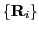
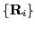
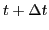
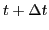

Next: Exercise 1: Vibrational dynamics Up: Summer School on Materials Previous: Summer School on Materials
In this exercise, we will be using Qbox to perform first-principles Born-Oppenheimer molecular dynamics (BOMD). Note that the Quantum-Espresso package you have been using for the other exercises also has a module (cp.x) for performing both Car-Parrinello and Born-Oppenheimer MD. Input files for both packages will be provided, although these notes assume you will be using Qbox (inputs for cp.x are set up for Car-Parrinello MD rather than Born-Oppenheimer MD).
The Qbox manual is located at: http://eslab.ucdavis.edu/software/qbox/QboxUserGuide.pdf. It contains detailed information about each of the input options in Qbox, only a few of which will be covered in this exercise.
For help on input variables for the cp.x module of Quantum-Espresso,
consult the INPUT_CP.html file within the `Doc' subdirectory of
the source distribution.
You might also find this general introduction to MD by Furio Ercolessi useful: http://www.fisica.uniud.it/~ercolessi/md/md/. Although it is based on interatomic potentials rather than first-principles techniques, much of the general material is relevant to both methods.
Molecular dynamics follows classical mechanics by solving Newton's
equations of motions for all atoms:
In classical MD, the force on an atom is obtained by differentiating
the potential energy  (usually represented analytically) with respect
to the positions
:
(usually represented analytically) with respect
to the positions
:
The forces at time  are used to obtain accelerations, which are then
integrated numerically to get the atomic positions at time . The
timestep
are used to obtain accelerations, which are then
integrated numerically to get the atomic positions at time . The
timestep  is the parameter that controls the coarseness of
the integration; this must be chosen independently for each
simulation. Too large a value of
is the parameter that controls the coarseness of
the integration; this must be chosen independently for each
simulation. Too large a value of  can lead to numerical instability
in the integration scheme and erratic behavior of conserved quantities (e.g.,
energy in the NVE ensemble). If
can lead to numerical instability
in the integration scheme and erratic behavior of conserved quantities (e.g.,
energy in the NVE ensemble). If  is too small,
simulations can take an unreasonably long amount of time, simulations can take
an unreasonably long amount of time.
is too small,
simulations can take an unreasonably long amount of time, simulations can take
an unreasonably long amount of time.
Both Qbox and cp.x use the Velocity Verlet algorithm for numerical integration, which updates the positions and velocities independently for greater numerical stability. Details can be found here: http://en.wikipedia.org/wiki/Verlet_integration#Velocity_Verlet.
In the canonical NVT ensemble (which we will be using for the MD runs) the ion velocities should follow a Maxwell-Boltzmann distribution once the system is thermalized. The time required for this thermalization to complete is system dependent but is often on the order of a few picoseconds.
Note that thermalization time is different from equilibration time! A system can often take much longer to equilibrate than to thermalize, as we will see in the exercise for Day 2.
In the canonical ensemble, temperature is controlled by rescaling the velocities, which is usually done by coupling the system to a heat bath. There are several different ways of doing so, but most try to maintain Maxwell-Boltzmann statistics.
Also, note that both Qbox and cp.x use gamma-only sampling of the Brillouin Zone. Since real and reciprocal space are inversely related, this means that your supercell size must be large enough to ensure that gamma sampling is accurate. In addition, the supercell must be large enough to realize long-wavelength fluctuations in atomic movements. This is especially important for simulating phenomena like phase transitions, which is the focus of Day 2 this week.